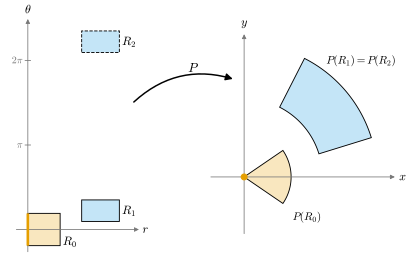

2.3 The Inverse Function Theorem
Goals
- \(\R^n\)의 open set 사이의 diffeomorphism과 local diffeomorphism을 정의하고, diffeomorphism의 total derivative가 invertible임을 보일 수 있다.
- inverse function theorem을 가정까지 정확히 진술하고, contraction mapping principle을 쓰는 증명의 flow를 설명할 수 있다.
- “한 점에서 \(DF\)가 invertible”이 주는 국소적 결론과, 대역적 injectivity는 주지 않는다는 한계를 polar coordinate map으로 설명할 수 있다.
- inverse map의 total derivative \(D(F^{-1})(F(x)) = DF(x)^{-1}\)을 계산할 수 있다.
Prerequisites
- Definition 2.1.1 (total derivative), Example 2.1.14 (polar coordinate map)
- Theorem 2.2.1 (chain rule), Definition 2.2.7 (operator norm), Proposition 2.2.8 (mean value inequality), Definition 2.2.11 (smooth map), Proposition 2.2.12
- Corollary 1.2.10, Corollary 1.2.17 (isomorphisms and invertible matrices), Theorem 1.6.8 (properties of the determinant)
Motivation
Section 2.2까지 map \(F\)를 한 점 근처에서 linear map \(DF(p)\)로 근사하고, 그 근사가 합성과 잘 맞음을 보았다. 그렇다면 linear map에 대해 아는 것이 map 자체에 대해서도 무언가를 말해 주는가? 가장 중요한 경우는 invertibility이다. linear map \(A\colon \R^n \to \R^n\)은 \(\det A \neq 0\)이면 invertible이다 (Theorem 1.6.8(b)). map \(F\)의 total derivative \(DF(p)\)가 invertible이면, \(F\) 자체도 \(p\) 근처에서 invertible인가?
1변수에서는 익숙한 이야기다. \(f'\)이 연속이고 \(f'(p) \neq 0\)이면 \(p\) 근처에서 \(f'\)의 부호가 일정하므로 \(f\)는 strictly monotone이고, 따라서 역함수가 있으며 \((f^{-1})' = 1/f'\)이다. 변수가 여럿이면 “strictly monotone”이라는 도구가 없다. 이 절의 inverse function theorem은 이 공백을 메운다. 이 정리는 뒤의 모든 장의 토대다. surface의 change of parameters(Chapter 6), manifold의 transition map(Chapter 11), immersion과 submersion(Chapter 14)이 모두 이 정리 위에 서 있다.

Diffeomorphisms
“invertible”의 뜻부터 정하자. inverse map이 있을 뿐 아니라 inverse map도 매끄러워야 미분을 써서 계산할 수 있다.
Definition 2.3.1 (diffeomorphism). \(U \subseteq \R^n\)과 \(V \subseteq \R^m\)이 open set이라 하자. map \(F\colon U \to V\)가 bijective이고 \(F\)와 inverse map \(F^{-1}\colon V \to U\)가 모두 매끄러우면 \(F\)를 diffeomorphism(미분동형사상)이라 한다. 이런 map이 있으면 \(U\)와 \(V\)가 diffeomorphic이라 한다. (\(F\)와 \(F^{-1}\)이 \(C^k\)급(\(k \ge 1\))이라는 것만 요구하면 \(C^k\)급 diffeomorphism이라 부른다.)
diffeomorphism은 “좌표를 매끄럽게 바꾸는 것”이다. \(y = F(x)\)라 두면 \(V\)의 점을 \(y\)로 불러도 되고 \(x = F^{-1}(y)\)로 불러도 되며, 두 이름 사이를 오가는 규칙이 양쪽으로 모두 매끄럽다.
Example 2.3.2. (a) \(A\)가 \(n \times n\) invertible matrix이고 \(b \in \R^n\)이면 \(F(x) = Ax + b\)는 \(\R^n\)에서 \(\R^n\)으로 가는 diffeomorphism이다. inverse map \(y \mapsto A^{-1}(y - b)\)도 같은 꼴이고, 두 map 모두 성분이 일차식이다. 특히 평행이동과 invertible linear map은 diffeomorphism이다.
(b) \(\exp\colon \R \to (0, \infty)\)는 diffeomorphism이다. inverse map \(\log\)가 \((0, \infty)\)에서 매끄럽다.
(c) open unit ball \(B = B_1(0) \subseteq \R^n\)에서 \(F(x) = x/\sqrt{1 - \abs{x}^2}\)로 두면 \(F\colon B \to \R^n\)은 diffeomorphism이고 inverse map은 \(G(y) = y/\sqrt{1 + \abs{y}^2}\)이다. \(G \circ F = \id_B\), \(F \circ G = \id_{\R^n}\)은 \(1 + \abs{F(x)}^2 = 1/(1 - \abs{x}^2)\)에서 확인된다. \(F\)와 \(G\)의 성분은 다항식과 양수의 제곱근의 몫이므로 Proposition 2.2.12에 의해 매끄럽다. 같은 map이 Chapter 3 Example 3.2.14(b)에서 homeomorphism의 예로 다시 나온다. ball은 “작아 보여도” \(\R^n\) 전체와 diffeomorphic이다.
Non-example 2.3.3 (smooth bijection that is not a diffeomorphism). \(f\colon \R \to \R\), \(f(x) = x^3\)은 매끄럽고 bijective이며 역함수는 \(f^{-1}(y) = y^{1/3}\)이다. 그러나 \(f^{-1}\)은 \(0\)에서 미분가능하지 않다. \((f^{-1}(h) - f^{-1}(0))/h = h^{1/3}/h = h^{-2/3}\)이 \(h \to 0\)일 때 발산하기 때문이다. 따라서 \(f\)는 diffeomorphism이 아니다. 문제가 생기는 곳은 \(f'(0) = 0\)인 점이다. 다음 명제가 이 현상을 설명한다.
Proposition 2.3.4 (total derivative of a diffeomorphism). \(U \subseteq \R^n\), \(V \subseteq \R^m\)이 open set이고 \(F\colon U \to V\)가 diffeomorphism이면, 모든 \(x \in U\)에서 \(DF(x)\)는 isomorphism이고 \(n = m\)이며
이다.
Proof. \(G = F^{-1}\)이라 하자. \(G \circ F = \id_U\)이고 identity map의 total derivative는 identity map이므로(Example 2.1.3(a)), chain rule에서 \(DG(F(x))\,DF(x) = \id_{\R^n}\)이다. 마찬가지로 \(F \circ G = \id_V\)를 점 \(F(x)\)에서 미분하면 \(DF(x)\,DG(F(x)) = \id_{\R^m}\)이다. 따라서 linear map \(DF(x)\colon \R^n \to \R^m\)은 양쪽 역을 가지므로 bijective, 즉 isomorphism이고 그 역은 \(DG(F(x))\)이다. Corollary 1.2.10(b), (c)에 의해 injective이면 \(n \le m\), surjective이면 \(n \ge m\)이므로 \(n = m\)이다.
Non-example 2.3.3에서 \(f'(0) = 0\)은 invertible이 아니므로, Proposition 2.3.4에 의해 \(f\)는 어떤 방법으로도 \(0\) 근처에서 diffeomorphism이 될 수 없다. 또 Proposition 2.3.4의 \(n = m\)은 “dimension이 다른 두 open set은 diffeomorphic이 아니다”라는 뜻이다. dimension은 diffeomorphism으로 바뀌지 않는 양이다.
The inverse function theorem
Proposition 2.3.4의 거꾸로가 이 절의 주제다. 한 점에서 total derivative가 invertible이면 그 점 근처에서 \(F\)가 diffeomorphism이 된다.
Theorem 2.3.5 (inverse function theorem). \(W \subseteq \R^n\)이 open set이고 \(F\colon W \to \R^n\)이 매끄러우며, \(p \in W\)에서 \(DF(p)\)가 invertible이라 하자(즉 \(\det DF(p) \neq 0\)). 그러면 \(p\)를 포함하는 open set \(U_0 \subseteq W\)와 \(F(p)\)를 포함하는 open set \(V_0\)이 있어서 \(F|_{U_0}\colon U_0 \to V_0\)가 diffeomorphism이다. 이때 모든 \(x \in U_0\)에서 \(D\big((F|_{U_0})^{-1}\big)(F(x)) = DF(x)^{-1}\)이다. \(F\)가 \(C^k\)급(\(k \ge 1\))이기만 하면 같은 결론이 \(C^k\)급 diffeomorphism으로 성립한다.
이 정리가 말하는 것. 한 점에서의 linear algebra(\(\det DF(p) \neq 0\))가 그 점 근처에서 방정식 \(F(x) = y\)를 푸는 문제에 답한다. \(y\)가 \(F(p)\)에 충분히 가까우면 \(p\) 근처에 해 \(x\)가 꼭 하나 있고, 그 해는 \(y\)에 매끄럽게 의존한다. 정리는 “\(p\) 근처”에 대해서만 말한다. \(U_0\)이 얼마나 큰지, \(F\)가 \(W\) 전체에서 injective인지는 말하지 않는다(Example 2.3.10).
증명은 \(F\)를 “identity map에 작은 perturbation을 더한 것”으로 보고, 방정식 \(F(x) = y\)를 fixed point 문제로 바꾸어 푼다. 그 도구가 다음 보조정리다. 여기서 미적분학의 사실 하나를 쓴다. \(\R^n\)의 Cauchy sequence는 수렴한다(\(\R^n\)의 completeness. 미적분학에서 알려진 사실로 받아들인다. Section 2.1 Preliminaries의 (iv)).
Lemma 2.3.6 (contraction mapping principle). \(K = \{x \in \R^n : \abs{x - c} \le \rho\}\)가 closed ball이고, map \(T\colon K \to K\)와 상수 \(0 \le \lambda \lt 1\)이 모든 \(x, x' \in K\)에 대하여 \(\abs{T(x) - T(x')} \le \lambda\abs{x - x'}\)를 만족한다고 하자. 그러면 \(T(x^*) = x^*\)인 \(x^* \in K\)가 꼭 하나 있다. 또 임의의 \(x_0 \in K\)에서 시작해 \(x_{k+1} = T(x_k)\)로 만든 수열은 \(x^*\)로 수렴한다.
Proof. 귀납법으로 \(\abs{x_{k+1} - x_k} \le \lambda^k\abs{x_1 - x_0}\)이다. \(m \gt k\)이면 triangle inequality와 등비급수에서 \(\abs{x_m - x_k} \le \sum_{j=k}^{m-1}\lambda^j\abs{x_1 - x_0} \le \frac{\lambda^k}{1 - \lambda}\abs{x_1 - x_0}\)이고, 이것은 \(k \to \infty\)일 때 \(0\)으로 가므로 \((x_k)\)는 Cauchy sequence이다. \(\R^n\)의 completeness(Section 2.1 Preliminaries의 (iv))에 의해 극한 \(x^*\)가 있다. 모든 \(k\)에서 \(\abs{x_k - c} \le \rho\)이고 norm은 연속이므로 \(\abs{x^* - c} \le \rho\), 즉 \(x^* \in K\)이다. \(\abs{T(x_k) - T(x^*)} \le \lambda\abs{x_k - x^*} \to 0\)이므로 \(T(x^*) = \lim T(x_k) = \lim x_{k+1} = x^*\)이다. 유일성: \(T(y^*) = y^*\)이기도 하면 \(\abs{x^* - y^*} = \abs{T(x^*) - T(y^*)} \le \lambda\abs{x^* - y^*}\)이고 \(\lambda \lt 1\)이므로 \(x^* = y^*\)이다.
Proof idea (Theorem 2.3.5): 좌표를 바꿔 \(p = 0\), \(F(0) = 0\), \(DF(0) = I\)로 만든다. 그러면 \(H(x) = x - F(x)\)는 \(0\) 근처에서 total derivative가 작아서 거리를 절반 이하로 줄인다. 방정식 \(F(x) = y\)는 \(x = y + H(x)\), 즉 \(T_y(x) = y + H(x)\)의 fixed point 문제가 되고, contraction mapping principle로 풀린다. inverse map의 매끄러움은 \(D(F^{-1}) = (DF)^{-1} \circ F^{-1}\)과 inverse matrix의 공식에서 나온다.
Proof sketch. 1단계(정규화). \(A = DF(p)\)라 하고 \(\tilde F(x) = A^{-1}\big(F(p + x) - F(p)\big)\)로 두면 \(\tilde F(0) = 0\)이고 chain rule에서 \(D\tilde F(0) = A^{-1}A = I\)이다. \(F = F(p) + A\,\tilde F(\,\cdot - p)\)는 \(\tilde F\)에 diffeomorphism(Example 2.3.2(a))을 앞뒤로 합성한 것이므로, \(\tilde F\)에 대해 정리를 보이면 \(F\)에 대해서도 성립한다. 따라서 \(p = 0\), \(F(0) = 0\), \(DF(0) = I\)라 가정한다.
2단계(injectivity와 거리의 하한). \(H(x) = x - F(x)\)로 두면 \(H(0) = 0\), \(DH(0) = 0\)이다. \(DH\)의 성분은 연속이고 \(0\)에서 \(0\)이므로, Proposition 1.5.7의 상수 \(C\)로 \(\norm{DH(x)} \le \big(\sum_{i,j}(\partial_j H^i(x))^2\big)^{1/2}\)를 쓰면 어떤 \(\delta \gt 0\)에 대해 closed ball \(K = \{\abs{x} \le 2\delta\}\)가 \(W\)에 포함되고 \(K\)에서 \(\norm{DH(x)} \le \tfrac12\)이다. mean value inequality(Proposition 2.2.8, ball은 선분을 포함한다)에서 \(x, x' \in K\)이면 \(\abs{H(x) - H(x')} \le \tfrac12\abs{x - x'}\)이고, 따라서
이다. 특히 \(F\)는 \(K\)에서 injective다. 또 \(\abs{x} \le 2\delta\)이면 \(DF(x)\)는 invertible이다. \(DF(x)v = 0\)이면 \(v = DH(x)v\)이므로 \(\abs{v} \le \tfrac12\abs{v}\), 즉 \(v = 0\)이기 때문이다.
3단계(surjectivity). \(V_0 = B_\delta(0)\)이라 하고 \(y \in V_0\)을 고정한다. \(T_y(x) = y + H(x)\)로 두면 \(x \in K\)일 때 \(\abs{H(x)} = \abs{H(x) - H(0)} \le \tfrac12\abs{x} \le \delta\)이므로 \(\abs{T_y(x)} \le \abs{y} + \delta \lt 2\delta\)이다. 즉 \(T_y\)는 \(K\)를 \(K\) 안으로 보내고, 2단계에서 \(\lambda = \tfrac12\)인 contraction map이다. Lemma 2.3.6에 의해 \(T_y(x) = x\), 즉 \(F(x) = y\)인 \(x \in K\)가 꼭 하나 있고, 위 부등식에서 \(\abs{x} = \abs{T_y(x)} \lt 2\delta\)이다. \(U_0 = \{x : \abs{x} \lt 2\delta,\ F(x) \in V_0\}\)라 하자. \(F\)가 open ball \(\{\abs{x} \lt 2\delta\}\)에서 연속이므로 \(U_0\)은 open set이고(open set의 연속 preimage는 open set, Section 2.1 Preliminaries), \(F|_{U_0}\colon U_0 \to V_0\)는 bijective다.
4단계(inverse map의 매끄러움). \(G = (F|_{U_0})^{-1}\colon V_0 \to U_0\)이라 하자. (2.3.2)에서 \(\abs{G(y) - G(y')} \le 2\abs{y - y'}\)이므로 \(G\)는 연속이다. \(y_0 = F(x_0)\)에서 미분가능함을 보이자. \(L = DF(x_0)^{-1}\)이라 하고 \(y = F(x)\)로 두면 \(G(y) - G(y_0) - L(y - y_0) = -L\big(F(x) - F(x_0) - DF(x_0)(x - x_0)\big)\)이다. 괄호 안은 \(F\)의 나머지로 \(\abs{x - x_0}\)보다 빨리 작아지고, \(\abs{x - x_0} \le 2\abs{y - y_0}\)이며, \(y \to y_0\)이면 \(G\)의 연속성에 의해 \(x \to x_0\)이다. 따라서 \(G\)는 \(y_0\)에서 미분가능하고 \(DG(y_0) = DF(G(y_0))^{-1}\)이다. 이제 \(\operatorname{inv}(M) = M^{-1}\)이라 하면 \(DG = \operatorname{inv} \circ DF \circ G\)이다. inverse matrix의 각 성분은 \(M\)의 성분의 다항식을 \(\det M\)으로 나눈 것이므로(Cramer's rule) \(\operatorname{inv}\)는 invertible matrix 전체에서 매끄럽다. \(G\)가 \(C^j\)급이면 \(DG\)는 \(C^j\)급 map들의 합성이므로 \(C^j\)급이고(Proposition 2.2.12), 따라서 \(G\)는 \(C^{j+1}\)급이다. \(j = 0\)에서 시작하는 귀납법으로 \(G\)는 매끄럽다(\(F\)가 \(C^k\)급이면 이 귀납법이 \(j = k\)에서 멈춘다).
위 증명 스케치는 \(\R^n\)의 completeness와 Cramer's rule이라는 두 사실을 인용했고, 1단계의 “diffeomorphism과의 합성”에서 정의역을 맞추는 세부를 생략했다. 완전한 증명은 [Sp-CoM Ch. 2], [Lee-ISM App. C]에 있다. do Carmo는 이 정리를 진술만 하고 증명은 다른 책으로 돌린다 [dC Ch. 2 Appendix].
증명은 구성적이다. 3단계의 반복을 원래 좌표로 되돌리면 \(x_{k+1} = x_k + DF(p)^{-1}\big(y - F(x_k)\big)\)이다. 기준 map으로 실제로 해 보자.
Example 2.3.7 (finding preimages by iteration). polar coordinate map \(P\)와 \(p = (3/2,\ \pi/6)\)에서 \(DP(p)\)는 Example 2.1.14에서 구했고 \(\det DP(p) = 3/2\)이다. inverse matrix는
\[ DP(p)^{-1} = \frac{1}{3/2}\begin{pmatrix} 3\sqrt3/4 & 3/4 \\ -1/2 & \sqrt3/2 \end{pmatrix} = \begin{pmatrix} \sqrt3/2 & 1/2 \\ -1/3 & \sqrt3/3 \end{pmatrix} \]
이다(\(2 \times 2\) 행렬 \(\begin{pmatrix} a & b \\ c & d \end{pmatrix}\)의 inverse matrix는 \(\frac{1}{ad - bc}\begin{pmatrix} d & -b \\ -c & a \end{pmatrix}\)). \(y = P(p) + (1/10,\ -1/10) \approx (1.39904,\ 0.65)\)라 하고 \(x_0 = p\)에서 시작해 \(x_{k+1} = x_k + DP(p)^{-1}(y - P(x_k))\)를 계산하면 다음과 같다(반올림).
- \(k = 0\): \(x_0 = (1.5,\ 0.52360)\), \(\abs{P(x_0) - y} = 0.1414\)
- \(k = 1\): \(x_1 = (1.53660,\ 0.43253)\), \(\abs{P(x_1) - y} = 0.0071\)
- \(k = 2\): \(x_2 = (1.54297,\ 0.43462)\), \(\abs{P(x_2) - y} = 0.00057\)
- \(k = 3\): \(x_3 = (1.54271,\ 0.43496)\), \(\abs{P(x_3) - y} = 0.000059\)
- \(k = 4\): \(x_4 = (1.54266,\ 0.43493)\), \(\abs{P(x_4) - y} = 0.0000045\)
오차가 매번 약 \(1/10\)로 준다. 이 점 근처에서는 축소 비율 \(\lambda\)가 \(\tfrac12\)보다 훨씬 작기 때문이다. 극한은 \(P^{-1}(y) = (\abs{y},\ \theta)\), \(\theta = 2\arctan\big(y^2/(y^1 + \abs{y})\big)\), 즉 \((1.54266,\ 0.43493)\)과 일치한다(이 공식은 Example 2.3.10(b)).
Verification: verify/v-2-3-inverse-function-theorem.py
Local diffeomorphisms
inverse function theorem의 결론을 모든 점에서 가지는 map에 이름을 붙이자.
Definition 2.3.8 (local diffeomorphism). \(U \subseteq \R^n\)이 open set이고 \(F\colon U \to \R^n\)이 매끄럽다고 하자. 모든 \(x \in U\)에 대하여 \(x\)를 포함하는 open set \(U_x \subseteq U\)가 있어서 \(F(U_x)\)가 open set이고 \(F|_{U_x}\colon U_x \to F(U_x)\)가 diffeomorphism이면, \(F\)를 local diffeomorphism(국소 미분동형사상)이라 한다.
diffeomorphism은 local diffeomorphism이다(\(U_x = U\)). 거꾸로는 성립하지 않는다(Example 2.3.10). \(f(x) = x^3\)은 \(0\)에서 조건을 어기므로 local diffeomorphism이 아니다(Non-example 2.3.3, Proposition 2.3.4).
Corollary 2.3.9 (criterion and properties of local diffeomorphisms). \(U \subseteq \R^n\)이 open set이고 \(F\colon U \to \R^n\)이 매끄럽다고 하자.
- (a) \(F\)가 local diffeomorphism일 필요충분조건은 모든 \(x \in U\)에서 \(DF(x)\)가 invertible인 것이다.
- (b) \(F\)가 local diffeomorphism이면, 모든 open set \(O \subseteq U\)에 대하여 \(F(O)\)는 open set이다. 특히 \(F(U)\)는 open set이다.
- (c) \(F\)가 injective인 local diffeomorphism이면 \(F\colon U \to F(U)\)는 diffeomorphism이다.
Proof. (a) \(F\)가 local diffeomorphism이면 \(F|_{U_x}\)에 Proposition 2.3.4를 쓴다. \(U_x\)가 open set이므로 \(F|_{U_x}\)의 total derivative는 \(DF(x)\)와 같고, 따라서 \(DF(x)\)는 invertible이다. 거꾸로 모든 점에서 \(DF(x)\)가 invertible이면 각 \(x\)에 Theorem 2.3.5를 쓰면 된다.
(b) \(y = F(x)\), \(x \in O\)라 하자. \(U_x\)를 정의의 open set이라 하고 \(G = (F|_{U_x})^{-1}\colon F(U_x) \to U_x\)라 하면 \(G\)는 open set \(F(U_x)\)에서 정의된 continuous map이다 (미분가능하므로, Proposition 2.1.7). \(O \cap U_x\)는 open set이므로 \(G^{-1}(O \cap U_x) = F(O \cap U_x)\)는 open set이다(open set의 연속 preimage, Section 2.1 Preliminaries). 이 집합은 \(y\)를 포함하고 \(F(O)\)에 포함되므로, 어떤 \(\varepsilon \gt 0\)에 대해 \(B_\varepsilon(y) \subseteq F(O)\)이다. \(y \in F(O)\)는 임의였으므로 \(F(O)\)는 open set이다.
(c) (b)에 의해 \(F(U)\)는 open set이고, \(F\)가 injective이므로 \(F\colon U \to F(U)\)는 bijective다. inverse map \(G\)가 매끄러움을 보이려면 각 점 근처에서 매끄러우면 된다(partial derivative는 근처의 값만으로 정해진다). \(y = F(x)\)의 neighborhood \(F(U_x)\)에서 \(G\)는 \((F|_{U_x})^{-1}\)과 같고(injectivity), 이것은 매끄럽다.
이제 이 장의 기준 map을 완전히 분석하자. Figure 2.3.1의 내용을 식으로 확인하는 것이다.
Example 2.3.10 (polar coordinate map: locally invertible, not globally). \(P(r, \theta) = (r\cos\theta,\ r\sin\theta)\)의 total derivative (2.1.5)는 \(\det DP(r, \theta) = r\)이다.
(a) \(r \neq 0\)이면 local diffeomorphism. \(\{(r, \theta) : r \neq 0\}\)은 open set이고 그 위에서 \(\det DP \neq 0\)이므로 Corollary 2.3.9(a)에 의해 \(P\)는 이 집합에서 local diffeomorphism이다. 그러나 injective가 아니다. \(P(r, \theta + 2\pi) = P(r, \theta)\)이고 \(P(-r, \theta + \pi) = P(r, \theta)\)이다. 그러므로 \(P\)는 \(\{r \gt 0\}\)에서 \(\R^2 \setminus \{0\}\) 위로 가는 local diffeomorphism이지만 diffeomorphism은 아니다.
(b) 정의역을 줄이면 diffeomorphism. \(W = (0, \infty) \times (-\pi, \pi)\)로 제한하자. \(P(r, \theta) = P(r', \theta')\)이면 \(r = \abs{P(r, \theta)} = r'\)이고, \((\cos\theta, \sin\theta) = (\cos\theta', \sin\theta')\)인 두 각이 \((-\pi, \pi)\)에 있으므로 \(\theta = \theta'\)이다. 따라서 \(P|_W\)는 injective이고, image는 음의 \(x\)축과 원점을 뺀 \(\Omega = \R^2 \setminus \{(x, 0) : x \le 0\}\)이다. Corollary 2.3.9(c)에 의해 \(P|_W\colon W \to \Omega\)는 diffeomorphism이다. inverse map은 \(r = \sqrt{x^2 + y^2}\), \(\theta = 2\arctan\dfrac{y}{x + \sqrt{x^2 + y^2}}\)로 쓸 수 있다. \(\Omega\)에서 \(x + \sqrt{x^2 + y^2} \gt 0\)이고, 반각 공식 \(\tan(\theta/2) = \sin\theta/(1 + \cos\theta) = y/(r + x)\)가 \(-\pi \lt \theta \lt \pi\)에서 성립하기 때문이다.
(c) inverse map의 total derivative. (2.3.1)에서 \(D(P|_W^{-1})(P(r, \theta)) = DP(r, \theta)^{-1}\)이고, \(2 \times 2\) inverse matrix 공식으로
이다. 둘째 등호는 \(\cos\theta = x/r\), \(\sin\theta = y/r\)을 넣은 것이다. \(r = \sqrt{x^2 + y^2}\)을 직접 미분해도 첫째 행을 얻는다. 이 행렬을 벡터 \(v\)에 곱한 것은 Example 1.4.11에서 구한 “polar coordinate basis에 대한 \(v\)의 성분”이다. 두 계산이 같은 것은 우연이 아니다. \(DP(r, \theta)\)의 열이 polar coordinate basis이므로, 그 basis에 대한 성분을 구하는 것은 \(DP(r, \theta)^{-1}\)을 곱하는 것이다.
(d) \(r = 0\)에서는 국소적으로도 invertible이 아니다. \(DP(0, \theta) = \begin{pmatrix} \cos\theta & 0 \\ \sin\theta & 0 \end{pmatrix}\)의 rank는 \(1\)이다. 실제로 \(P\)는 직선 \(\{r = 0\}\) 전체를 원점으로 보내므로, \((0, \theta)\)의 어떤 neighborhood에서도 injective가 아니다(그 neighborhood는 \((0, \theta')\) 꼴의 점을 무수히 포함한다).
Verification: verify/v-2-3-inverse-function-theorem.py
Example 2.3.11 (local invertibility is global in one variable). \(I\)가 열린구간이고 \(h\colon I \to \R\)가 매끄러우며 모든 \(t \in I\)에서 \(h'(t) \neq 0\)이라 하자. 그러면 \(J = h(I)\)는 열린구간이고 \(h\colon I \to J\)는 diffeomorphism이며 \((h^{-1})'(h(t)) = 1/h'(t)\)이다. 이유. \(h'\)은 연속이고 \(0\)이 되지 않으므로 intermediate value theorem에 의해 부호가 일정하다(미적분학에서 알려진 사실로 받아들인다. Section 2.1 Preliminaries의 (v), 증명은 Corollary 3.7.6). 그러면 1변수 평균값 정리에 의해 \(h\)는 strictly monotone이고, 따라서 injective다. \(h\)는 연속이므로 \(h(I)\)는 구간이고(intermediate value theorem), Corollary 2.3.9(b)에 의해 open set이므로 열린구간이다. Corollary 2.3.9(c)에서 결론이 나온다. 역함수의 도함수는 (2.3.1)이다. 2변수에서는 “\(DF\)가 모든 점에서 invertible”만으로 부족했던 것과 대조된다. 1변수에서는 strict monotonicity가 injectivity를 보장하기 때문이다. 이 사실은 Chapter 4에서 곡선을 arc length로 reparametrization할 때 쓰이고(Theorem 4.3.9), Chapter 4는 이것을 Lemma 4.2.5에서 1변수 방법으로 다시 증명한다.
Summary
- diffeomorphism은 inverse map까지 smooth bijective다. diffeomorphism의 total derivative는 invertible이고 \(D(F^{-1})(F(x)) = DF(x)^{-1}\)이며, dimension이 같아야 한다(Proposition 2.3.4).
- inverse function theorem: \(DF(p)\)가 invertible이면 \(F\)는 \(p\)의 어떤 neighborhood에서 그 image 위로 가는 diffeomorphism이다(Theorem 2.3.5). 증명은 contraction mapping principle로 \(F(x) = y\)를 푼다.
- 모든 점에서 \(DF\)가 invertible인 것은 local diffeomorphism과 같고, local diffeomorphism은 open set을 open set으로 보낸다. injective이면 diffeomorphism이다(Corollary 2.3.9).
- polar coordinate map은 \(r \neq 0\)에서 local diffeomorphism이지만 injective가 아니고, \(W = (0, \infty) \times (-\pi, \pi)\)에서는 diffeomorphism이다. inverse map의 total derivative는 (2.3.3)이다.
다음 절에서는 미지수가 방정식보다 많은 경우, 즉 \(F(x, y) = c\)를 일부 변수에 대해 푸는 문제를 다룬다. inverse function theorem에서 곧바로 implicit function theorem이 나오고, 그 결과 level set이 국소적으로 그래프가 되는 조건을 얻는다.
Exercises
Exercise 2.3.1 ★ \(F(x, y) = (x^2 - y^2,\ 2xy)\)가 \(\R^2 \setminus \{0\}\)에서 local diffeomorphism이지만 injective가 아님을 보여라. \((1, 1)\) 근처의 국소 inverse map \(G\)에 대하여 \(DG(0, 2)\)를 구하여라.
Solution
Exercise 2.1.1에서 \(\det DF(x, y) = 4(x^2 + y^2)\)이므로 원점 밖에서 \(DF\)가 invertible이고, Corollary 2.3.9(a)에 의해 local diffeomorphism이다. \(F(-x, -y) = F(x, y)\)이므로 injective가 아니다. \(F(1, 1) = (0, 2)\)이고 (2.3.1)에서 \[ DG(0, 2) = DF(1, 1)^{-1} = \begin{pmatrix} 2 & -2 \\ 2 & 2 \end{pmatrix}^{-1} = \frac18\begin{pmatrix} 2 & 2 \\ -2 & 2 \end{pmatrix} = \begin{pmatrix} 1/4 & 1/4 \\ -1/4 & 1/4 \end{pmatrix} \] 이다.
Verification: verify/v-2-3-inverse-function-theorem.py
Exercise 2.3.2 ★ \(E(x, y) = (e^x\cos y,\ e^x\sin y)\)가 \(\R^2\) 전체에서 local diffeomorphism이고, image가 \(\R^2 \setminus \{0\}\)이며, injective가 아님을 보여라.
Solution
\(DE(x, y) = \begin{pmatrix} e^x\cos y & -e^x\sin y \\ e^x\sin y & e^x\cos y \end{pmatrix}\)이고 \(\det DE = e^{2x}(\cos^2 y + \sin^2 y) = e^{2x} \gt 0\)이므로 local diffeomorphism이다. \(E(x, y) = P(e^x, y)\)이고 \(\exp\colon \R \to (0, \infty)\)는 surjective이므로 \(E(\R^2) = P\big((0, \infty) \times \R\big) = \R^2 \setminus \{0\}\)이다(모든 \(q \neq 0\)은 \(q = P(\abs{q}, \theta)\)로 쓸 수 있다). \(E(x, y + 2\pi) = E(x, y)\)이므로 injective가 아니다.
Exercise 2.3.3 ★ spherical coordinates map \(G(\rho, \theta, \varphi) = (\rho\sin\theta\cos\varphi,\ \rho\sin\theta\sin\varphi,\ \rho\cos\theta)\)에 대하여 \(\det DG = \rho^2\sin\theta\)임을 보이고, \(G\)가 local diffeomorphism이 되는 점을 모두 구하여라. (Example 2.6.11에서 사용)
Solution
열은 \(\partial_\rho G = (\sin\theta\cos\varphi, \sin\theta\sin\varphi, \cos\theta)\), \(\partial_\theta G = (\rho\cos\theta\cos\varphi, \rho\cos\theta\sin\varphi, -\rho\sin\theta)\), \(\partial_\varphi G = (-\rho\sin\theta\sin\varphi, \rho\sin\theta\cos\varphi, 0)\)이다. 셋째 행 \((\cos\theta,\ -\rho\sin\theta,\ 0)\)으로 cofactor expansion을 하면 \[ \begin{aligned} \det DG &= \cos\theta\,(\rho^2\cos\theta\sin\theta\cos^2\varphi + \rho^2\cos\theta\sin\theta\sin^2\varphi) \\ &\quad + \rho\sin\theta\,(\rho\sin^2\theta\cos^2\varphi + \rho\sin^2\theta\sin^2\varphi) \\ &= \rho^2\sin\theta(\cos^2\theta + \sin^2\theta) = \rho^2\sin\theta \end{aligned} \] 이다. 첫째 괄호는 셋째 행과 첫째 열을 지운 \(2 \times 2\) minor이고 부호는 \(+\)이다. 둘째 괄호는 셋째 행과 둘째 열을 지운 minor이고, 그 부호 \(-\)가 성분 \(-\rho\sin\theta\)의 부호와 만나 \(+\rho\sin\theta\)가 된다. 따라서 \(DG\)는 \(\rho \neq 0\)이고 \(\sin\theta \neq 0\)인 점에서만 invertible이고, Corollary 2.3.9(a)에 의해 그 점들의 open set \(\{\rho \neq 0,\ \theta \notin \pi\Z\}\)에서 local diffeomorphism이다. \(\rho = r\)로 고정하면 \(\partial_\theta G, \partial_\varphi G\)는 sphere의 standard parametrization의 \(\mathbf{x}_\theta, \mathbf{x}_\varphi\)이다.
Verification: verify/v-2-3-inverse-function-theorem.py
Exercise 2.3.4 ★ 참인지 거짓인지 판별하고 이유를 대어라. (a) diffeomorphism의 total derivative는 모든 점에서 invertible이다. (b) \(\R\)에서 \(\R\)로 가는 smooth bijective는 diffeomorphism이다. (c) 모든 점에서 \(DF(x)\)가 invertible이면 \(F\)는 injective다. (d) \(F\colon U \to \R^n\)이 local diffeomorphism이면 \(F(U)\)는 open set이다.
Solution
(a) 참. Proposition 2.3.4. (b) 거짓. Non-example 2.3.3의 \(x^3\). (c) 거짓. Example 2.3.10(a)의 polar coordinate map이나 Exercise 2.3.2의 \(E\). (d) 참. Corollary 2.3.9(b).
Exercise 2.3.5 ★★ \(f(x) = x + 2x^2\sin(1/x)\) (\(x \neq 0\)), \(f(0) = 0\)이라 하자. \(f\)는 모든 점에서 미분가능하고 \(f'(0) = 1\)이지만, \(0\)을 포함하는 어떤 열린구간에서도 injective가 아님을 보여라. inverse function theorem의 어떤 가정이 빠졌는가?
Hint
\(x_k = 1/(2k\pi)\)와 \(y_k = 1/((2k+1)\pi)\)에서 \(f'\)의 부호를 본다. 연속이고 injective인 1변수 함수는 구간에서 strictly monotone이다.
Solution
\(f'(0) = \lim_{h \to 0} (h + 2h^2\sin(1/h))/h = 1 + \lim 2h\sin(1/h) = 1\)이다. \(x \neq 0\)이면 \(f'(x) = 1 + 4x\sin(1/x) - 2\cos(1/x)\)이므로 \(f'(x_k) = 1 + 0 - 2 = -1\), \(f'(y_k) = 1 + 0 + 2 = 3\)이다. \(f'\)은 \(x \neq 0\)에서 연속이므로 \(x_k\) 근처에서 \(f\)는 strictly decreasing이고 \(y_k\) 근처에서 strictly increasing이다. \(x_k, y_k \to 0\)이므로 \(0\)을 포함하는 어떤 열린구간에도 \(f\)가 strictly decreasing인 부분과 strictly increasing인 부분이 함께 있고, 따라서 \(f\)는 그 구간에서 strictly monotone이 아니다. 연속이고 injective인 구간 위의 함수는 strictly monotone이므로(intermediate value theorem, Section 2.1 Preliminaries의 (v)), \(f\)는 그 구간에서 injective가 아니다. 빠진 가정은 \(C^1\)급이라는 것이다. \(f'\)은 \(0\)에서 연속이 아니다.
Verification: verify/v-2-3-inverse-function-theorem.py
Exercise 2.3.6 ★★ \(n \times n\) 실수 행렬 전체를 \(\R^{n^2}\)과 같게 보고 \(S(A) = A^2\)이라 하자. \(DS(A)H = AH + HA\)임을 보이고, identity matrix \(I\) 근처의 행렬 \(B\)는 \(I\) 근처에 제곱근을 꼭 하나 가지며 그 제곱근이 \(B\)에 대해 매끄럽게 변함을 보여라.
Hint
행렬의 성분을 늘어놓은 벡터의 norm을 \(\abs{H}\)라 하면 \(\abs{H^2} \le \abs{H}^2\)이다(각 성분에 Cauchy–Schwarz inequality).
Solution
\(S(A + H) - S(A) = AH + HA + H^2\)이다. \(H \mapsto AH + HA\)는 linear이고, 힌트의 부등식에 의해 \(\abs{H^2}/\abs{H} \le \abs{H} \to 0\)이므로 \(DS(A)H = AH + HA\)이다. (힌트의 부등식: \((H^2)_{ij} = \sum_k H_{ik}H_{kj}\)이므로 Cauchy–Schwarz inequality에서 \(\abs{(H^2)_{ij}}^2 \le \big(\sum_k H_{ik}^2\big)\big(\sum_k H_{kj}^2\big)\)이고, \(i, j\)에 대해 더하면 \(\abs{H^2}^2 \le \abs{H}^4\).) \(A = I\)이면 \(DS(I)H = 2H\)이고 이 linear map은 invertible이다(역은 \(H \mapsto H/2\)). \(S\)의 성분은 다항식이므로 매끄럽다. Theorem 2.3.5에 의해 \(I\)를 포함하는 open set \(U_0\)과 \(S(I) = I\)를 포함하는 open set \(V_0\)이 있어서 \(S\colon U_0 \to V_0\)가 diffeomorphism이다. 즉 \(B \in V_0\)이면 \(A^2 = B\)인 \(A \in U_0\)이 꼭 하나 있고, \(B \mapsto A = (S|_{U_0})^{-1}(B)\)는 매끄럽다.
Verification: verify/v-2-3-inverse-function-theorem.py
Exercise 2.3.7 ★★★ \(g\colon \R^n \to \R^n\)이 매끄럽고 모든 \(x\)에서 \(\norm{Dg(x)} \le \tfrac12\)이라 하자. \(F(x) = x + g(x)\)가 \(\R^n\)에서 \(\R^n\) 위로 가는 diffeomorphism임을 보여라.
Hint
inverse function theorem 증명의 2, 3단계를 \(\R^n\) 전체에서 한다. surjectivity에는 \(T_y(x) = y - g(x)\)를 충분히 큰 closed ball에서 쓴다.
Solution
injective. Proposition 2.2.8(\(\R^n\)은 모든 선분을 포함한다)에서 \(\abs{g(x) - g(x')} \le \tfrac12\abs{x - x'}\)이므로 \(\abs{F(x) - F(x')} \ge \abs{x - x'} - \tfrac12\abs{x - x'} = \tfrac12\abs{x - x'}\)이다. 따라서 \(F\)는 injective다.
local diffeomorphism. \(DF(x)v = 0\)이면 \(v = -Dg(x)v\)이므로 \(\abs{v} \le \tfrac12\abs{v}\), 즉 \(v = 0\)이다. \(DF(x)\)는 모든 점에서 invertible이고, Corollary 2.3.9(a)에 의해 \(F\)는 local diffeomorphism이다.
surjective. \(y\)를 고정하고 \(T_y(x) = y - g(x)\)로 두면 \(F(x) = y \iff T_y(x) = x\)이다. \(\abs{T_y(x)} \le \abs{y} + \abs{g(0)} + \abs{g(x) - g(0)} \le \abs{y} + \abs{g(0)} + \tfrac12\abs{x}\)이므로, \(\rho = 2(\abs{y} + \abs{g(0)})\)로 두면 \(\abs{x} \le \rho\)일 때 \(\abs{T_y(x)} \le \rho/2 + \rho/2 = \rho\)이다. 즉 \(T_y\)는 closed ball \(\{\abs{x} \le \rho\}\)를 자기 자신으로 보내는 \(\lambda = \tfrac12\)인 contraction map이고, Lemma 2.3.6에 의해 fixed point가 있다.
injective이고 surjective인 local diffeomorphism이므로 Corollary 2.3.9(c)에 의해 \(F\colon \R^n \to \R^n\)은 diffeomorphism이다.